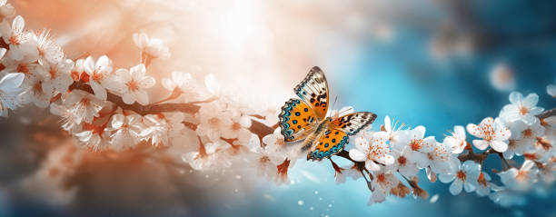
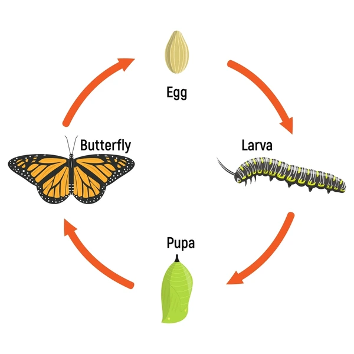
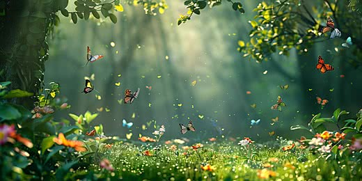
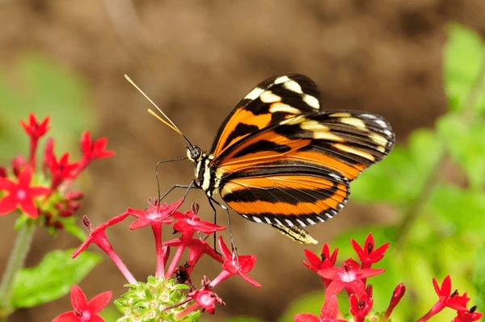
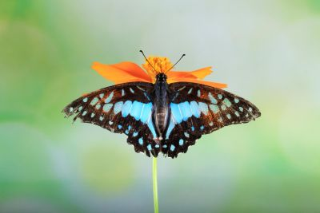
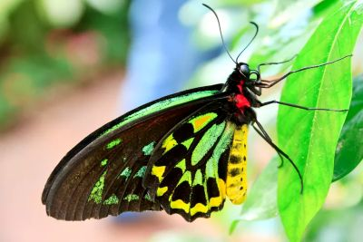
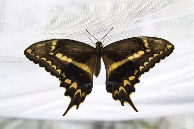

Overview
The butterfly is a colorful pollinator and an important part of ecosystems worldwide.
Life Cycle
Butterflies undergo complete metamorphosis: Egg → Larva → Pupa → Adult.
Habitat
Found in gardens, forests, meadows, and other areas rich in flowers.
Diet
Butterflies primarily feed on nectar from flowers.
Rare Species

Blue Morpho
One of the largest butterflies, native to Central & South America. Known for its brilliant blue wings.

Queen Alexandra's Birdwing
World's largest butterfly, rare and endangered, found in Papua New Guinea.

Schaus' Swallowtail
A rare tropical butterfly with unique wing patterns, native to Florida and the Caribbean.
Features
Colorful wings for camouflage or warning predators.
Pollinate flowers while feeding on nectar.
Undergo complete metamorphosis.
Some species are extremely rare and endangered.